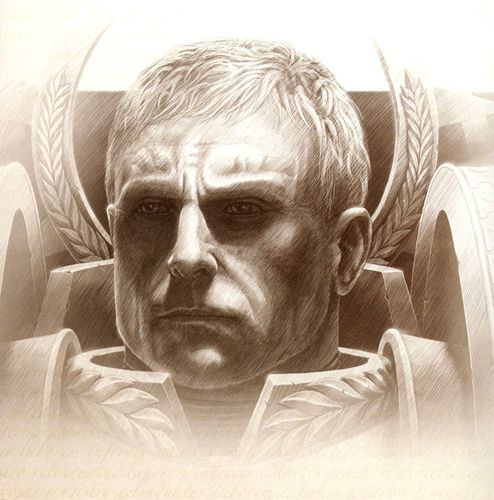
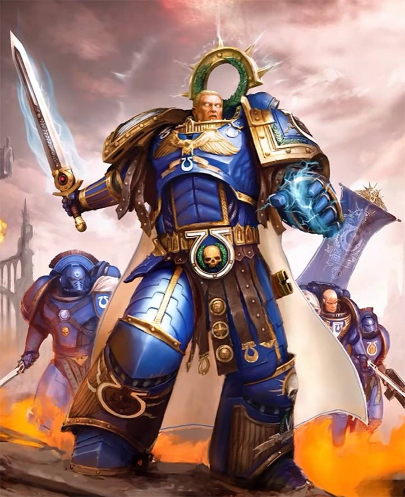

Roboute Guilliman
| Roboute Guilliman | |
|---|---|
| Primarch of the XIII Legion | |
 The Lord Commander leading the Ultramarines during the Indomitus Crusade Artwork © Games Workshop | |
| Lord Commander of the Imperium | |
| Tenure | 014.M31 – 121.M31 999.M41 – present |
| Monarch | Emperor of Mankind |
| Predecessor | Position established (014.M31) Maximus Thane (999.M41; office restored after the vacancy that began c. 626.M32) |
| Successor | Unrecorded holders styled "Lord Guilliman" (from 121.M31) Incumbent |
| Primarch of the Ultramarines | |
| Tenure | 837.M30 – present |
| Predecessor | Position established |
| Successor | Incumbent |
| Lord Warden of Imperium Secundus | |
| Tenure | During the Horus Heresy |
| Monarch | Sanguinius (Imperator Regis) |
| Predecessor | Position established |
| Successor | Position abolished (Imperium Secundus dissolved) |
| Lord of Macragge and Ultramar | |
| Predecessor | Konor Guilliman (as consul) |
| Created | c. 792.M30, Terra |
| Discovered | 837.M30, by the Emperor of Mankind |
| Wounded | 121.M31, by Fulgrim at Thessala |
| Restored | 999.M41, in the Temple of Correction, Macragge |
| Status | Active; leader of the Indomitus Crusade |
| Allegiance | Imperium of Mankind (loyalist) |
| Relatives |
|
| Wargear | Armour of Fate; the Emperor's Sword; Hand of Dominion; the Iron Halo |
| Known for | The Codex Astartes; the Second Founding; the Indomitus Crusade |
Roboute Guilliman, called the Avenging Son and in the early 42nd millennium the Lord Commander of the Imperium, is the primarch of the Ultramarines and the Imperial Regent. He was the thirteenth of the twenty primarchs created by the Emperor of Mankind. He was raised on Macragge in the east of the galaxy, where he became the ruler of a flourishing republic before the Emperor found him in 837.M30. Under his command the Ultramarines became the largest of the Space Marine Legions, and the realm of Ultramar, which grew from Macragge, covered some five hundred worlds at the height of the Great Crusade.[1][2]
During the Horus Heresy Guilliman was caught on the far side of the Ruinstorm. His Legion was ambushed on Calth by the Word Bearers in the opening move of the Warp storm that cut Ultramar from Terra. Guilliman could not reach the Siege of Terra in time, and arrived after the Emperor had been entombed on the Golden Throne. He took the mantle of Lord Commander, wrote the Codex Astartes and oversaw the Second Founding, which broke the Legions into Chapters of about a thousand warriors. About a century later he was mortally wounded by his brother Fulgrim, and was placed in stasis in the Temple of Correction on Macragge.[3][2]
Guilliman was revived in 999.M41, a few months after the Fall of Cadia, by the Archmagos Belisarius Cawl and the power of the aeldari god Ynnead. He crossed the galaxy to Terra in the Terran Crusade, spoke with the Emperor, and proclaimed the Indomitus Crusade, the largest military effort of the Imperium since the Great Crusade. His forces include the Primaris Space Marines raised by Cawl, with which the Lord Commander is rebuilding the Imperium's defences against Chaos and the powers that menace it.[4][5]
Early life
[edit]Macragge
[edit]The capsule that held the infant Guilliman fell on Macragge in about 792.M30, a cold world on the eastern edge of the galaxy that belonged to a decayed star empire dating from before the Age of Strife. Macragge had kept a few short-range warp-capable ships, a functioning industry, and an administrative culture that treated war as a science. The capsule was found in a forest by a party of Macraggian magnates, who recognised it as advanced technology and opened it to find a healthy child. The boy was adopted by the consul Konor Guilliman, who gave him the name Roboute.[1]

The boy grew with unnatural speed and exhausted the teaching of the wisest scholars of the republic by his tenth year. His foster father granted him command of an expedition to subdue the barbarous northern lands of Illyrium as soon as he reached legal adulthood. Roboute pacified the region by a campaign of manoeuvre and negotiation, earning the respect of its warlords as well as their submission.[1]
Death of Konor Guilliman
[edit]While Roboute was in the north, Konor's co-consul Gallan staged a coup with the support of the old aristocracy, whose estates were threatened by Konor's reforms. Roboute returned to find Macragge Civitas in flames and the Senate House under siege. Konor had defended it for three days against the rebels, but died before his son reached him. Roboute crushed the conspirators, executed their ringleaders, put the others to hard labour rebuilding the city, and took over the consulship himself.[1]
The new consul broke the power of the old nobility, spread pre-Strife technology beyond the elite, and recast Macragge as a strict meritocracy in which office was earned by service. Within a few years the republic had one of the best-equipped planetary armies in the region. Macragge, the Imperial chroniclers recall, "flourished as never before".[1]
Discovery and the realm of Ultramar
[edit]The Emperor arrived at Macragge in 837.M30 and found his son at the head of a prosperous state. According to Ultramarines tradition the Emperor met Guilliman without the dissembling that had been needed with more savage sons such as Leman Russ, Ferrus Manus, Mortarion and Vulkan. Guilliman had already surmised the purpose for which he had been created, and swore fealty at once.[1] The XIII Legion, previously known as the "War-born", was placed under his command.
Guilliman was given an independent command in the east, with Macragge as his base and the 12th Expeditionary Fleet at his disposal. He rebuilt the Legion on a new plan, drawing on the military doctrines and political philosophies of Macragge and on a study of every Legion and army in the Emperor's service. The reform allowed the Ultramarines to absorb recruits faster than any other Legion. Recruitment was meritocratic, and the intake dwarfed that of every other Legion by the middle years of the crusade.[1]
Under Guilliman, Macragge grew into Ultramar, a realm of some five hundred worlds that he administered as a model Imperial province. The worlds he brought into compliance were given self-supporting defences and an efficient government. By some Imperial records the Ultramarines liberated more human worlds than any other Legion. By the time Horus was named Warmaster at Ullanor, the Ultramarines numbered more than a quarter of a million Space Marines, and the Legion's strength, and the realm that supported it, was a feature of the political landscape.[2]
The Ultramarines' Great Crusade campaigns included the war against the Osirian Psybrids at the Eurydice Terminal, where Guilliman himself killed the psybrid king in its innermost chamber, at the cost of his chief battle psyker, and against Ork empires and the xenos of the eastern fringe.[2]

The Horus Heresy
[edit]Calth and the Ruinstorm
[edit]When Horus rebelled in 005.M31, the Ultramarines had been ordered to muster on Calth, in the Veridian system. In 007.M31 the Word Bearers, who had long resented Guilliman's Legion, struck at the Ultramarines on Calth and turned the world's own defence platforms against its sun. The star's outer layers were stripped away and the surface became uninhabitable. At the same time the Word Bearers' sorcerers conjured the Ruinstorm, a Warp storm that cut Ultramar off from the rest of the Imperium. The Ultramarines on Calth, many of whom were native to the world, held fortified positions, and Guilliman coordinated their defence by clear orders broadcast to each pocket of resistance while his fleet struck at the Word Bearers' ships.[2][6]
The Shadow Crusade
[edit]After Calth the Word Bearers and the World Eaters launched the Shadow Crusade in the south and east, laying waste to twenty-six worlds. Guilliman's retribution fleet caught up with them at Nuceria in 008.M31, the home of Angron, whose Legion had scoured the world of life in vengeance for his old slavery.[6]
Imperium Secundus
[edit]Beyond the Ruinstorm, Guilliman met his brothers Sanguinius and Lion El'Jonson, whose Legions had been guided to Macragge by a strange alien beacon on the world of Sotha. In 009.M31 the three primarchs founded Imperium Secundus, a stopgap realm intended to continue the Emperor's work if Terra fell. Guilliman proclaimed Sanguinius, the Emperor's chosen heir, as its ruler and made the Lion its Lord Protector. The arrangement soured when the Night Lords' primarch Konrad Curze escaped the Lion's fleet and spread terror in Macragge. After a quarrel over how to deal with him, Guilliman broke the Lion's sword in anger and the Lion was exiled, though he returned within hours to claim custody of Curze.[6][a]
Davin and the Siege of Terra
[edit]The three brothers learned that the Emperor lived beyond the storm, abolished Imperium Secundus and fought through the Ruinstorm toward Terra. At the Second Battle of Davin, in about 011.M31, the world on which Horus had first been corrupted, Guilliman and the Lion fought together to save Sanguinius, who was trapped in a portal to the Warp. Davin was destroyed, and the breach that its destruction opened allowed the Blood Angels to race to Terra while the Ultramarines and Dark Angels fought a diversion.[6]
Guilliman was too far from Terra to take part in the Siege of Terra. His fleet of more than three thousand capital ships emerged from the Warp within hours of the Emperor's duel with Horus, but the Astronomican was dark and he could not find Terra. It was relit by the faith of Euphrati Keeler and her followers, and Guilliman arrived to find Terra in ruins and the Emperor on the Throne.[7]
Lord Commander of the Imperium
[edit]The Imperial reform
[edit]Guilliman became the leading figure of the new regime. In 014.M31 he took the office of Lord Commander of the Imperium, with the rank of Imperial Regent, in the place of Malcador the Sigillite, who had died holding the Throne. He worked to restore order while the loyal Legions fought the Great Scouring against the Traitors who remained.[3]
He had meanwhile written a new doctrine of war, the Codex Astartes, whose key provision was the division of the Legions into Chapters of about a thousand warriors each. The Second Founding, decreed in 021.M31, seven years after the death of Horus, put it into effect. The Ultramarines were divided most often of all, and the new Chapters drawn from their stock, the Primogenitors, honour Guilliman as their patron. Rogal Dorn, Leman Russ and Vulkan opposed the measure at first, and it was accepted only after the Iron Cage.[3]
Cawl and the Primaris project
[edit]At some point in this period Guilliman charged the Archmagos Belisarius Cawl, who had worked under the Emperor in the Biotechnical Division, with two tasks. The first was to find a way to restore Guilliman to life should he fall. The second was to create a new breed of Space Marine, stronger and more resilient than the Emperor's originals. Cawl accepted both, and spent ten thousand years on them on Mars.[8]
Eskrador and Thessala
[edit]Guilliman continued to lead the Imperium and the Ultramarines for about a century. At Eskrador, during the Scouring in about 020.M31[b], he met a primarch of the Alpha Legion and killed a warrior whom he took for Alpharius. The Alpha Legion did not break, and the Imperial accounts of the death are disputed, since another record has Alpharius killed by Rogal Dorn at Pluto. In 121.M31, at Thessala, Guilliman was struck down by Fulgrim, by now a daemon prince of Slaanesh, whose blade cut his throat and poisoned him. He was carried to Macragge and placed in a stasis field in the Temple of Correction, in the Fortress of Hera.[2][6]
The temple became one of the holiest places of the Imperial Cult. Pilgrims flocked there in their millions each year. Some claimed that the wound on his throat was slowly healing, though savants insisted that nothing can change in a stasis field.[9]
Era Indomitus
[edit]Awakening
[edit]
In 999.M41 the 13th Black Crusade under Abaddon the Despoiler broke through the Cadian Gate. At the Fall of Cadia the planet was destroyed, and the Warp storms that followed joined to form the Great Rift. Cawl, who had been on Cadia, escaped with an armoured reliquary and a suit of artificer armour, the Armour of Fate. Guided by the Harlequins and aided by the aeldari prophetess Yvraine of the Ynnari, the Celestinian Crusade, named for the saint Celestine, made for Macragge.[4][5]
Macragge was under attack from the Black Legion and its allies. In the Temple of Correction, Cawl set about reviving the body in the stasis field, and the Chaos forces assaulted the temple to prevent it. When the defenders were close to being overwhelmed, Yvraine called on Ynnead, the aeldari god of the dead. The power of the god, working with Cawl's technology, healed the wound on Guilliman's neck, and the primarch rose from his throne after ten thousand years. He shattered the Chaos assault and, in the days that followed, drove the Archenemy from Macragge and most of Ultramar within seven months.[4]
Guilliman was crowned as the primarch of the Ultramarines and of their Successor Chapters, and resumed his place as Lord of Macragge. His first acts were to restore the borders of Ultramar to those of the Great Crusade, and to appoint four Tetrarchs to govern the realm, among them the Ultramarines' First Captain Severus Agemman and his Primaris equerry Captain Decimus Felix.[4]
The Terran Crusade
[edit]Guilliman was shaken by what he found. The Imperium of his memory had been a state of reason, and the Imperium of the 41st millennium was a theocracy that burned its psykers and worshipped its dead Emperor. He resolved to go to Terra and consult the Emperor. He assembled a fleet and left Ultramar in the hands of Marneus Calgar.[4]
The Terran Crusade fleet was intercepted by the Daemon Primarch Magnus the Red near the Maelstrom and flung into the Warp rift. It wandered from daemon world to daemon world for months, losing ships. The Lord Commander was finally bound by the greater daemon Kairos Fateweaver in chains made of his own guilt. The fleet was saved by the Harlequin Shadowseer Sylandri Veilwalker and by the Fallen Angel Cypher, who freed Guilliman in return for a promise that the Fallen would be brought before the Golden Throne. The Imperials reached Terra through the Webway by way of a Blackstone Fortress, where Guilliman fought the Bloodthirster Skarbrand the Exiled One and killed him. At the Lunar gate of the Webway they were met by Magnus and his Thousand Sons, whom Guilliman beat back with the help of the Harlequins, the Sisters of Silence and the Imperial Fists. The gate was sealed.[4]
On Terra, Guilliman spent a solar day before the Golden Throne. What passed between father and son is not recorded, though Guilliman's later reflections suggest that the Emperor's attitude to him was colder than he had expected, and that the primarch left the Inner Palace convinced that he had been regarded as a weapon. He emerged to proclaim himself Lord Commander and to promise the largest fleet and armies since the Great Crusade.[4][c]
The Indomitus Crusade
[edit]The Indomitus Crusade began in the closing days of 999.M41 and the first days of the 42nd millennium. Its first act was the defence of the Imperial Palace at the Lion's Gate, where the Khornate Blood Legions of the Red Host assaulted the walls as the Great Rift opened. Guilliman led the Primaris Space Marines, the Adeptus Custodes and the Sisters of Silence in the defence, and the daemonic assault was beaten back.[5] He then assembled Fleet Primus, with Primaris Marines of the new Chapters and the nine Legions of the "Unnumbered Sons", elements of the Adeptus Custodes and strike forces from many First Founding Chapters led by the Imperial Fists.
The crusade fought across the Imperium Sanctus, breaking sieges and relieving worlds. The relief of Baal, which was assaulted by Hive Fleet Leviathan, brought the Blood Angels' Chapter Master Dante and the Sanguinary Brotherhood into the crusade. Its first phase ended at the Battle of Raukos in about 012.M42, after which Guilliman returned to the defence of Ultramar.[4][d]
The Plague Wars
[edit]The Plague Wars were the invasion of Ultramar by the servants of Nurgle, led by Mortarion, the Death Guard and the daemonic Plague Legions of the Great Unclean One Ku'Gath, who operated from the corrupted Scourge Stars. The attack fell on Espandor, Iax, Konor and Macragge. Guilliman cleansed the hive world of Ardium of its Death Guard garrison, then re-established the Tetrarch Council of Ultramar and reorganised the defence. In his Spear of Espandor campaign he retook that system and killed the Great Unclean One Qaramas with the Emperor's Sword.[4]
The war ended on Iax, a hospital world that had been taken by the enemy. Guilliman confronted Mortarion in person and, like his experience of Fulgrim and Magnus, was beaten and infected with the daemon's Godblight. In the moment between life and death he experienced a vision of his meeting with the Emperor, and understood that the Emperor had awoken for a moment during their conversation. The Emperor's power burned the plague from his body and, as a conduit of that power, Guilliman struck through the Warp at the Garden of Nurgle itself. Mortarion fled and the Death Guard were recalled by their god. Ultramar was freed, though it remains under threat from the Scourge Stars.[4]
Reform of the Imperium
[edit]As Lord Commander, Guilliman has attempted to reform the Imperium as well as defend it. He has purged corrupt High Lords of Terra and reorganised the Council, and restored the old borders of Ultramar. He has tolerated, without endorsing, the veneration of himself as a saint by the Ecclesiarchy, and he has been willing to treat with aeldari when the Imperium's need is great. His reforms have met stiff resistance from the Administratum.[4]
Return of the Lion
[edit]In the early 42nd millennium Guilliman's brother Lion El'Jonson woke from his long sleep. The two brothers have old differences, dating from Imperium Secundus, and Imperial records say little about how they have dealt with each other since. The Dark Angels hold that their primarch answers to the Emperor alone, and the Lord Commander has not publicly contested the point.[10]
Character and abilities
[edit]Guilliman is the most methodical of the primarchs: a statesman, administrator and strategist before he is a warrior. Imperial chroniclers describe him as cold, exacting and rigorous in his planning, and as capable of fierce rage when provoked. He is a stern judge of other men and of himself. After his return he has been described as grim and burdened, haunted by his failure at Thessala and by the discovery of what the Imperium has become.[5] His tactical gifts are unmatched among his surviving brothers; he has defeated armies larger than his own by coordination and logistics, and by an ability to broadcast clear orders to every part of a battle at once.[2]
His strength as a warrior, though never his chief gift, is well attested. In the Great Crusade he killed the Osirian Psybrid king in single combat, and in the Era Indomitus he has slain greater daemons, including Skarbrand and Qaramas. Against the daemon primarchs he has been less successful: Fulgrim wounded him, Magnus defeated him on the road to Terra, and Mortarion beat him on Iax. He is not infallible, and he admits it.[4]
Wargear
[edit]In the Great Crusade Guilliman wore the Armour of Reason, an artificer suit that was remade many times to eliminate any flaw revealed in battle. His arms included the power fist called the Hand of Dominion, a master-crafted power sword, the Gladius Incandor, and a custom combi-bolter, the Arbitrator. His armour held a battlefield sensorium, the Cognis Signum, in the manner of the Mechanicus' own Thallax troops.[2]
On his return Guilliman took up:
- The Armour of Fate, a unique suit of artificer armour made on Mars, whose workings include life-support technology. It was kept by Cawl for ten thousand years.[8]
- The Emperor's Sword, the blade that the Emperor himself bore in the Great Crusade, given to Guilliman on his assuming the mantle of Lord Commander. It is wreathed in flame from hilt to tip.[4]
- The Hand of Dominion, a newer version of his old power fist, now with a built-in bolter.
- The Iron Halo, a protective device worn above the head, here made as a laurel crown in the manner of the Ultramarines' own captains.
Legacy
[edit]Guilliman is the most celebrated of the surviving primarchs. The Ultramarines and the Primogenitor Chapters honour him as their founding father, and the Imperial Cult, in defiance of his own wishes, has begun to venerate him as a living saint. His Codex Astartes remains the foundation of the Adeptus Astartes' doctrine, though some Chapters, such as the Space Wolves, the Dark Angels and the Blood Angels, follow their own traditions.[3] His return has revived the Imperium's morale and brought an influx of Primaris Marines to the front lines, and it has divided the High Lords between those who regard the Lord Commander as the Imperium's best hope and those who fear that he threatens the entrenched powers of Terra.
Timeline
[edit]| Date | Event |
|---|---|
| c. 792.M30 | Created on Terra; his capsule falls on Macragge |
| 837.M30 | Found by the Emperor; takes command of the XIII Legion, the Ultramarines |
| 963.M30 | Razes Monarchia on Khur at the Emperor's command, humiliating the Word Bearers |
| 000.M31 | Present at the Triumph of Ullanor |
| 007.M31 | The Battle of Calth; the Ruinstorm cuts Ultramar off from Terra |
| 007–008.M31 | The Shadow Crusade; Guilliman defeats the traitors at Nuceria in 008.M31 |
| 009.M31 | Founds the Imperium Secundus with Sanguinius and Lion El'Jonson |
| c. 011.M31 | Imperium Secundus dissolved; the Second Battle of Davin |
| 014.M31 | Arrives at Terra after the Siege of Terra; becomes Lord Commander of the Imperium |
| 014–c. 021.M31 | Directs the Great Scouring and writes the Codex Astartes |
| 021.M31 | The Second Founding divides the Legions into Chapters |
| 121.M31 | Mortally wounded by Fulgrim at Thessala; placed in stasis in the Temple of Correction |
| 999.M41 | Revived by Belisarius Cawl after the Fall of Cadia; the Terran Crusade; launches the Indomitus Crusade |
See also
[edit]Notes
[edit]- ^ Imperial accounts disagree on the details of the quarrel. The Ultramarines' record blames the Lion's proposal of an orbital bombardment of the rebel region of Illyrium. The Dark Angels' record sets the blame on Guilliman's refusal to take the threat seriously.
- ^ Date estimated from the sequence of events.
- ^ The vision that Guilliman later received on Iax suggests that the Emperor was conscious for a time during the meeting, a point that the Lord Commander has not discussed in public.
- ^ The earliest Imperial reports described the crusade as lasting a century, ending with the Plague Wars. The Lord Commander's own records, revised in 003.M42, place the Plague Wars in the early years of the crusade, and no end date is set. The revised chronology is the accepted one.
References
[edit]- ^ a b c d e f g Haley, Guy. Belisarius Cawl: The Great Work (novel). Black Library, Ch. 6. Haley, Guy. Dark Imperium (novel). Black Library, Chs. 10, 17, 20, 22.
- ^ a b c d e f g h Haley, Guy. Dark Imperium: Godblight (novel). Black Library, Chs. 2, 33-43. French, John. Slaves to Darkness (novel). Black Library, Chs. 1-3.
- ^ a b c d McNeill, Graham. Defenders of Ultramar (Graphic Novel). Black Library, Issue 1, pg. 5. Abnett, Dan. The Unremembered Empire (novel). Black Library.
- ^ a b c d e f g h i j k l m Thorpe, Gav. Angels of Caliban (novel). Black Library. Annandale, David. Ruinstorm (novel). Black Library.
- ^ a b c d Abnett, Dan. The End and the Death: Volume III (novel). Black Library, Interlude: Distant Sons-i, 10:vii. Warhammer 40,000: Rulebook (8th Edition), pp. 50-53, 154-159, 167. Games Workshop.
- ^ a b c d e Dembski-Bowden, Aaron. The First Hertic (novel). Black Library. Abnett, Dan. Know No Fear (novel). Black Library.
- ^ Dembski-Bowden, Aaron. Betrayer (novel). Black Library. Annandale, David. Roboute Guilliman: Lord of Ultramar (novel). Black Library.
- ^ a b Gathering Storm - Book Three - Rise of the Primarch (7th Edition), pp. 4-93. Games Workshop. Warhammer 40,000 Rulebook (6th Edition), pp. 161, 187, 403. Games Workshop.
- ^ Codex: Space Marines (5th Edition), pp. 7-9, 12-15, 24, 84. Games Workshop. Warhammer 40,000 Rulebook (5th Edition), pg. 134. Games Workshop.
- ^ Codex: Space Marines (3rd Edition), pg. 36. Games Workshop. Codex: Ultramarines (2nd Edition), pp. 4, 7-9, 11-13, 15. Games Workshop.
Further reading
[edit]- Guilliman, Roboute (c. 021.M31). Codex Astartes. Macragge. The reform of the Legions in the primarch's own words.
- Records of the Indomitus Crusade (ongoing). Office of the Lord Commander. The campaigns of the Lord Commander since 999.M41.
- Cawl, Belisarius (c. 999.M41). Notes on the Ultima Founding. Mars. The making of the Primaris Space Marines.